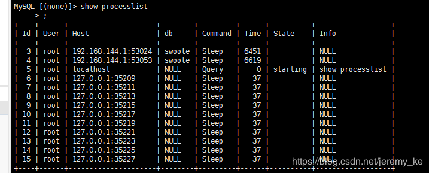

swoole4创建Mysql连接池原文出处:本文由博客园博主久伴成忆提供。
原文连接:https://www.cnblogs.com/starluke/p/11770799.html
一 .什么是mysql连接池
场景：每秒同时有1000个并发，但是这个mysql同时只能处理400个连接，mysql会宕机。
解决方案：连接池，这个连接池建立了200个和mysql的连接，这1000个并发就有顺序的共享这连接池中的200个连接。
这个连接池能够带来额外的性能提升，因为这个和mysql建立连接的这个过程消耗较大，使用连接池只需连接一次mysql。
连接池定义：永不断开，要求我们的这个程序是一个常驻内存的程序。数据库连接池（Connection pooling）是程序启
动时建立足够的数据库连接，并将这些连接组成一个连接池，由程序动态地对池中的连接进行申请，使用，释放。
二.小案例
查找用户表数据库最新注册的3个会员？
（1）小提示
show processlist #mysql查看连接数
（2）创建10个mysql连接示例代码
<?php
/**
* Created by PhpStorm.
* User: Luke
* Date: 2019/10/30
* Time: 14:12
*/
//编写mysql连接池，这个类只能被实例化一次（单例）
class MysqlConnectionPool
{
private static $instance;//单例对象
private $connection_num = 10;//连接数量
private $connection_obj = [];
//构造方法连接mysql，创建20mysql连接
private function __construct()
{
for($i=0;$i<$this->connection_num;$i++){
$dsn = "mysql:host=127.0.0.1;dbnane=swoole";
$this->connection_obj[] = new Pdo($dsn,'root','rootmysql123');
}
}
private function __clone()
{
// TODO: Implement __clone() method.
}
public static function getInstance()
{
if(is_null(self::$instance)){
self::$instance = new self();
}
}
}
MysqlConnectionPool::getInstance();
//创建swool的http服务器对象
$serv = new swoole_http_server('0.0.0.0',8000);
//当浏览器链接点这个http服务器的时候,向浏览器发送helloworld
$serv->on('request', function($request,$response){
//$request包含这个请求的所有信息，比如参数
//$response包含返回给浏览器的所有信息，比如helloworld
//(2.3)向浏览器发送helloworld
$response->end("hello world");
});
//启动http服务器
$serv->start();
（3）效果

（4）完善mysql连接池
<?php
/**
* Created by PhpStorm.
* User: Luke
* Date: 2019/10/30
* Time: 14:12
*/
//编写mysql连接池，这个类只能被实例化一次（单例）
class MysqlConnectionPool
{
private static $instance;//单例对象
private $connection_num = 20;//连接数量
private $connection_obj = [];
private $avil_connection_num = 20;//可用连接
//构造方法连接mysql，创建20mysql连接
private function __construct()
{
for($i=0;$i<$this->connection_num;$i++){
$dsn = "mysql:host=127.0.0.1;dbname=swoole";
$this->connection_obj[] = new Pdo($dsn,'root','rootmysql123');
}
}
private function __clone()
{
// TODO: Implement __clone() method.
}
public static function getInstance()
{
if(is_null(self::$instance)){
self::$instance = new self();
}
return self::$instance;
}
//执行sql操作
public function query($sql)
{
if($this->avil_connection_num==0){
throw new Exception("暂时没有可用的连接诶，请稍后");
}
//执行sql语句
$pdo = array_pop($this->connection_obj);
//可用连接数减1
$this->avil_connection_num --;
//使用从连接池中取出的mysql连接执行查询，并且把数据取成关联数组
$rows = $pdo->query($sql)->fetchAll(PDO::FETCH_ASSOC);
//把mysql连接放回连接池，可用连接数+1
array_push($this->connection_obj,$pdo);
$this->avil_connection_num ++;
return $rows;
}
}
//创建swool的http服务器对象
$serv = new swoole_http_server('0.0.0.0',8000);
//当浏览器链接点这个http服务器的时候,向浏览器发送helloworld
$serv->on('request', function($request,$response){
//$request包含这个请求的所有信息，比如参数
//$response包含返回给浏览器的所有信息，比如helloworld
//向浏览器发送helloworld
$stop = false;
while (!$stop){
try{
$sql = "SELECT * FROM user ORDER BY id DESC LIMIT 5";
$rows = MysqlConnectionPool::getInstance()->query($sql);
$response->end(json_encode($rows));
$stop = true;
}catch (Exception $e){
usleep(100000);
}
}
});
//启动http服务器
$serv->start();
进阶之路：想要了解更多的进阶知识点的话可以点击这里奥！